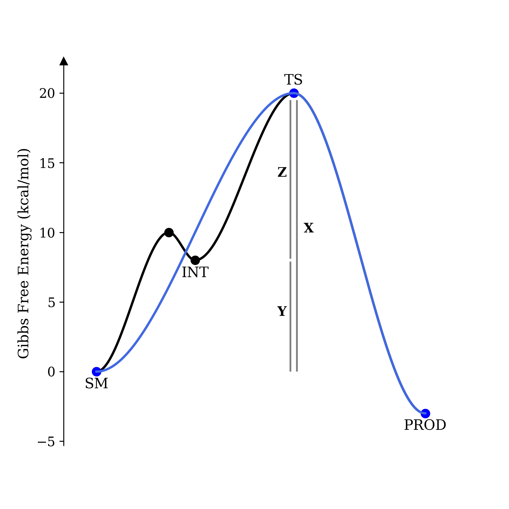
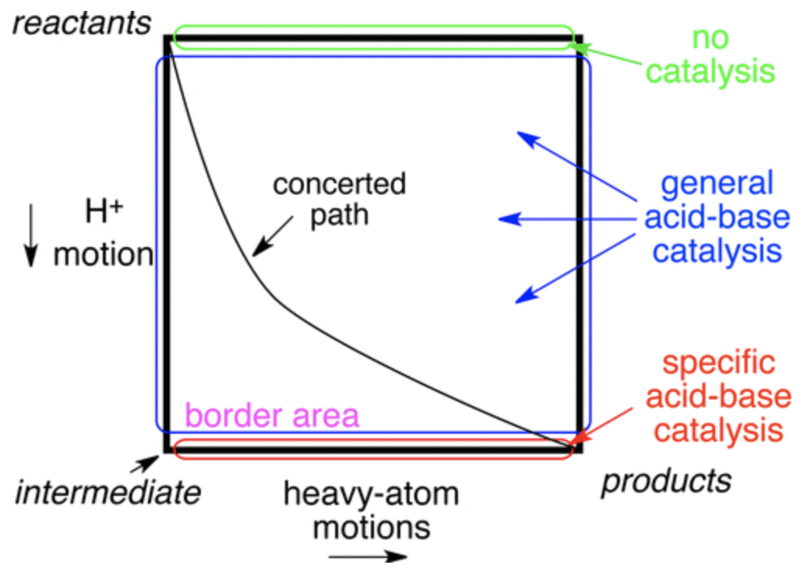
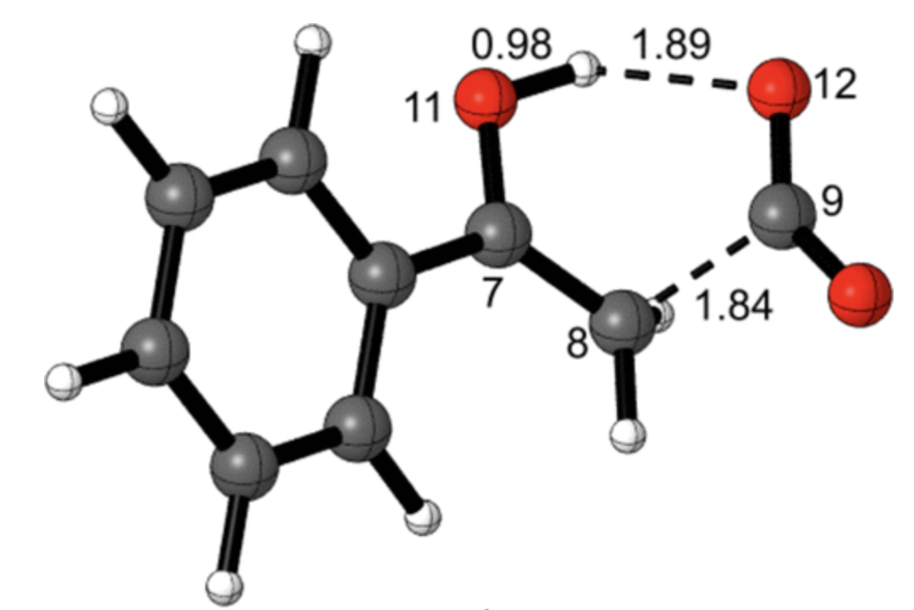

Organic chemists often think in terms of potential energy surfaces, especially when plotting the results of a computational study.
Unfortunately it is non-trivial to generate high-quality potential energy surfaces. It's not too difficult to sketch something crude in ChemDraw or Powerpoint, but getting the actual
barrier heights correct and proportional has always seemed rather tedious to me.
I've admired the smooth potential energy surfaces from the Baik group for years, and so several months ago I decided to try and write my own
program to generate these diagrams. I initially envisioned this as a python package (with the dubiously clever name of pypes), but it turned out to be simpler than expected, such that I
haven't actually ever turned it into a library. It's easier to just copy and paste the code into various Jupyter notebooks as needed.
Here's the code:
# get packages
import numpy as np
import scipy.interpolate as interp
import matplotlib.pyplot as plt
# make matplotlib look good
plt.rc('font', size=11, family="serif")
plt.rc('axes', titlesize=12, labelsize=12)
plt.rc(['xtick', 'ytick'], labelsize=11)
plt.rc('legend', fontsize=12)
plt.rc('figure', titlesize=14)
%matplotlib inline
%config InlineBackend.figure_format='retina'
# x and y positions. y in kcal/mol, if you want, and x in the range [0,1].
Y = [2.49, 3.5, 0, 20.2, 19, 21.5, 20, 20.3, -5]
X = [0, 0.15, 0.3, 0.48, 0.55, 0.63, 0.70, 0.78, 1]
# labels for points. False if you don't want a label
label = ["label1", False, "label2", "label3", "label4", "label5", "label6", "label7", "label8"]
#### shouldn't need to modify code below this point too much...
# autodetect which labels correspond to transition states
TS = []
for idx in range(len(Y)):
if idx == 0 or idx == len(Y)-1:
TS.append(False)
else:
TS.append((Y[idx] > Y[idx+1]) and (Y[idx] > Y[idx-1]))
# sanity checks
assert len(X) == len(Y), "need X and Y to match length"
assert len(X) == len(label), "need right number of labels"
# now we start building the figure, axes first
f = plt.figure(figsize=(8,8))
ax = f.gca()
xgrid = np.linspace(0, 1, 1000)
ax.spines[['right', 'bottom', 'top']].set_visible(False)
YMAX = 1.1*max(Y)-0.1*min(Y)
YMIN = 1.1*min(Y)-0.1*max(Y)
plt.xlim(-0.1, 1.1)
plt.tick_params(axis='x', which='both', bottom=False, top=False, labelbottom=False)
plt.ylim(bottom=YMIN, top=YMAX)
ax.plot(-0.1, YMAX,"^k", clip_on=False)
# label axes
plt.ylabel("Gibbs Free Energy (kcal/mol)")
plt.xlabel("Reaction Coordinate")
# plot the points
plt.plot(X, Y, "o", markersize=7, c="black")
# add labels
for i in range(len(X)):
if label[i]:
delta_y = 0.6 if TS[i] else -1.2
plt.annotate(
label[i],
(X[i], Y[i]+delta_y),
fontsize=12,
fontweight="normal",
ha="center",
)
# add connecting lines
for i in range(len(X)-1):
idxs = np.where(np.logical_and(xgrid>=X[i], xgrid<=X[i+1]))
smoother = interp.BPoly.from_derivatives([X[i], X[i+1]], [[y, 0] for y in [Y[i], Y[i+1]]])
plt.plot(xgrid[idxs], smoother(xgrid[idxs]), ls="-", c="black", lw=2)
# finish up!
plt.tight_layout()
plt.show()
The output looks like this:
The potential energy surface generated by the above code.
If you like how this looks, feel free to use this code; if not, modify it and make it better! I'm sure this isn't the last word in potential-energy-surface creation, but it's good enough for me.
Now that our work on screening for generality has finally been published in Nature, I wanted to first share a few personal reflections and then highlight the big conclusions that I gleaned from this project.
This project originated from conversations I had with Eugene Kwan back in February 2019, when I was still an undergraduate at MIT. Although at the time our skills were almost completely non-overlapping, we shared both an interest in “big data” and high-throughput experimentation and a conviction that organic chemistry could benefit from more careful thinking about optimization methods.
After a few months of work, Eugene and I had settled on the idea of a “catalytic reaction atlas” (in analogy to the cancer genome atlas) where we would exhaustively investigate catalysts, conditions, substrates, etc. for a single asymmetric reaction and then (virtually) compare different optimization methods to see which algorithms led to the best hits. Even with fairly conservative assumptions, we estimated that this would take on the order of 105 reactions, or about a year of continuous HPLC time, meaning that some sort of analytical advance was needed.
A slide comparing different optimization strategies, from April 2019. Multi-substrate screening is proposed as one of many different algorithms.
When I proposed this project to Eric, he was interested but suggested we focus more narrowly on the question of generality, or how to discover reactions with broad substrate scope. In an excited phone call, Eugene and I had the insight that we could screen lots of substrates at once by using mass spectrometry, thus bypassing our analytical bottleneck and enabling us to access the “big data” regime without needing vast resources to do so.1
Getting the analytical technology to work took about two years of troubleshooting. We were lucky to be joined by Spencer, an incredible analytical chemist and SFC guru, and eventually were able to get reproducible and accurate data by a combination of experimental insights (running samples at high dilution) and computational tweaks (better peak models and fitting algorithms). To make sure that the method was working properly, we ran validation experiments both on a bunch of scalemic samples and on a varied set of complex pharmaceutical racemates.
Choosing the proper reaction took a bit of thought, but once we settled on a set of substrates and catalysts the actual experiments were a breeze. Almost all the screening for this project was done in November–December 2021: in only a few hours, I could easily run and analyze hundreds of reactions per week.
I want to conclude by sharing three high-level conclusions that I’ve taken away from working on this project; for the precise scientific conclusions of this study, you can read the paper itself.
1. Chemical space is big, so how you search matters
There are a ton of potential catalysts waiting to be discovered, and it seems likely that almost any hit can be optimized to 90% ee by sufficient graduate-student hours. Indeed, one of the reasons we selected the Pictet–Spengler reaction was the diversity of different catalyst structures capable of giving high enantioselectivity. But just because you can get 90% ee from a given catalyst family doesn’t mean you should: it might be terrible for other substrates, or a different class of catalysts might be much easier to optimize or much more reactive.
Understanding how many catalysts are out there to be discovered should make us think more carefully about which hits we pursue, since our time is too valuable to waste performing needless catalyst optimizations. In this study, we showed that screening only one substrate can be misleading when the goal is substrate generality, but one might prefer to screen for other factors: low catalyst loading, tolerance of air or water, or recyclability all come to mind. In all cases, including these considerations in initial screens means that the hits generated are more likely to be relevant to the final goal. Just looking for 90% ee is almost certainly not the best way to find a good reaction.
2. Don’t ignore analytical chemistry
Although assay development is a normal part of many scientific fields, many organic chemists seem to barely consider analytical chemistry in their research. Any ingenuity is applied to developing new catalysts, while the analytical method remains essentially a constant factor in the background. This is true even in cases where the analytical workflow represents a large fraction of the project (e.g. having to remove toluene before NMR for every screen).
This shouldn’t be the case! Spending time towards the beginning of a project to develop a nice assay is an investment that can yield big returns: this can be as simple as making a GC calibration curve to determine yield from crude reaction mixtures, or as complex as what we undertook here. Time is too valuable to waste running endless columns.
More broadly, it seems like analytical advances (e.g. NMR and HPLC) have had a much bigger impact on the field than any individual chemical discoveries. Following this trend forward in time would imply that we should be making bigger investments in new analytical technologies now, to increase scientist productivity in the future.
3. A little computer science can go a long way
A key part of this project (mentioned only briefly in the paper) was developing our own peak-fitting software that allowed us to reliably fit overlapped peaks. This was computationally quite simple and relied almost entirely on existing libraries (e.g. scipy and lmfit), but took a certain amount of comfort with signal processing / data science.2 We later ended up moving our software pipeline out of unwieldy Jupyter notebooks and into a little Streamlit web app that Eugene wrote, which allowed us to quickly and easily get ee values from larger screens.
Neither of these two advances required significant coding skill; rather, just being able to apply some computer science techniques to our chemistry problem unlocked new scientific opportunities and massive time savings (a la Pareto principle). Moving forward, I expect that programming will become a more and more central tool in scientific research, much like Excel is today. Being fluent in both chemistry and CS is currently a rare and valuable combination, and will only grow in importance in the coming decades.
Thanks to Eugene Kwan for reading a draft of this post.
Footnotes
I'd like to propose the following principle: any sufficiently clever analytical technique inevitably depends on mass spectrometry. If you don't believe me, just look at the field of proteomics...
One common misconception in mechanistic organic chemistry is that reactions are accelerated by speeding up the rate-determining step.
This mistaken belief can lead to an almost monomaniacal focus on determining the nature of the rate-determining step.
In fact, it's more correct to think of reactions in terms of the rate-determining span: the difference between the resting state and the highest-energy transition state.
(I thank Eugene Kwan's notes for introducing me to this idea.)
In this post, I hope to demonstrate the veracity of this concept by showing that, under certain idealized assumptions, the existence of a low-energy intermediate has no effect on rate. Consider the following system:
Concerted and stepwise mechanisms.
We can imagine plotting these two mechanisms on a potential energy surface:

Concerted and stepwise mechanisms, on a PES.
In this example, X = Y + Z; the energy of the transition state and ground state are the same in both cases, and only the presence (or absence) of an intermediate differentiates the two potential energy surfaces. We will now compute the rate of product formation in both cases.
Using the Eyring–Polyani equation, it's straightforward to arrive at an overall rate for the concerted reaction as a function of the barrier:
k = kBT/h * exp(-X/RT)
rateconcerted = k * [SM]
rateconcerted = kBT/h * exp(-X/RT) * [SM]
The stepwise case is only slightly more complicated. Assuming that the barrier to formation of the intermediate is much lower than the barrier to formation of the product, and that the intermediate is substantially lower in energy than the rate-limiting transition state, we can apply the pre-equilibrium approximation:
ratestepwise = k2 * [INT]
k2 = kBT/h * exp(-Z/RT)
ratestepwise = kBT/h * exp(-Z/RT) * [INT]
Solving for [INT] is straightforward, and we can plug the result in to get our final answer:
As promised, the rates are the same—where the preequilibrium approximation holds, the existence of an intermediate has no impact on rate.
All that matters is the relative energy of the transition state and the ground state.
This method of thinking is particularly useful for rationalizing tricky Hammett trends. For instance, it's known that electron-rich indoles react much faster in Brønsted-acid-catalyzed Pictet–Spengler reactions, even though these reactions proceed through rate-determining elimination from a carbocation. Since electron-poor carbocations are more acidic, simple analysis of the rate-determining step predicts the opposite trend.
However, if we ignore the intermediate, it's clear that the transition state contains much more carbocationic character than the ground state, and so electron-donating groups will stabilize the transition state relative to the ground state and thereby accelerate the reaction. Thinking about intermediates is a great way to get confused; to understand trends in reactivity, all you need to consider is the transition state and the ground state.
The growing accessibility of computational chemistry has, unfortunately, led to a preponderance of papers with bad computations. Organic chemists are all too familiar with the “DFT section” of an otherwise high-quality publication which typically contains a transition-state structure or two, some sort of enigmatic cartoon purporting to explain the observed selectivity, and perhaps an uninterpretable NCIPLOT cited as evidence for the preceding claims.1
Faced with this sort of landscape, experimental chemists typically adopt one of two faulty heuristics: excessive credulity or universal skepticism. Being too trusting is dangerous, as evidenced by work showcasing the manifold ways that simulations can deceive the unwary scientist. Almost anyone who’s made a catalyst predicted to be better by computations knows this well (even when the computations are your own).
However, equally dangerous—and, in my view, less appreciated—is the creeping ennui that diminishes the entire field. This is exemplified by statements like “I don’t believe computations can ever be predictive,” “You can make DFT say anything you want to,” or, more delicately, “Computations are more for generating hypotheses, not being physically correct.” Although most people may be too polite to admit this to their computational collaborators, this nihilism is pervasive—just listen to the conversations as students walk back from a departmental seminar.
This viewpoint is wrong. The existence of bad computational models does not mean that all models are bad, nor does it imply that the task of creating models is inherently futile. Examples from other scientific fields, like orbital mechanics and fluid dynamics, indicate that computations can achieve impressive degrees of accuracy and become pivotal and trustworthy components of the scientific process. Closer to home, even the most skeptical chemists would admit that for e.g. calculating IR frequencies in the ground state, DFT shows impressive predictive accuracy (modulo the usual systematic error). There’s no intrinsic reason why accurately modeling chemical systems, even prospectively, ought to be impossible; chemistry is not a social science.
Why, then, is this variety of skepticism so common? Part of the problem comes from the bewildering milieu of options available to practitioners in the field. While a seasoned expert can quickly assess the relative merits of BYLP/MIDI! and DSD-PBEP86/def2-TZVP, to the layperson it’s tough to guess which might be superior. Without transparent heuristics by which to judge the quality of computational results, it’s no surprise that zeroth-order approximations (“DFT good” or “DFT bad”) have become so common among non-experts.2
Another issue is the generally optimistic demeanor of computational chemists towards their field. While the temptation to emphasize the potential upside of one’s research area is understandable, overestimating the capabilities of state-of-the-art technology inevitably leads to a reckoning when the truth becomes obvious. Except in certain circumscribed cases, we are still far from any predictive models of reactivity or selectivity for typical solution-phase reactions, various purported “breakthroughs” notwithstanding. Based on questions I’ve heard in talks, this uncomfortable truth is not universally understood by experimental audiences.
What, then, are the practical conclusions for computational chemists? Firstly, we should not be afraid to be our field’s own harshest critics. Allowing low-quality work into the literature erodes trust in our field; although raising our standards may be difficult and unpopular in the short term (kinetics), in the long run it will benefit the field (thermodynamics). You never get a second chance at a first impression; every bad paper published causes good papers to get that much less attention.
Secondly, we should work to develop consistent standards and workflows by which one can obtain reliable computational results. Just like there are accepted means by which new compounds are characterized (1H NMR, 13C NMR, HRMS, IR), there ought to be transparent methods by which transition states can reliably be found and studied. The manifold diversity of parameters employed today is a sign of the field’s immaturity—in truly mature fields, there’s an accepted right way to do things.3 The growing popularity of tools like crest is an important step in this direction, as is the ability to to use high-level post-Hartree–Fock wavefunction methods like DLPNO-CCSD(T) to refine single-point energies.
Finally, we must be honest about the limitations of our techniques and our results. So much about the chemical world remains mysterious and far beyond our understanding, let alone our ability to reproduce in silico. Far from being a failure for the field, however, this is something to be acknowledged and celebrated; science is only possible when there remain secrets to be found.
Between the Scylla of gullible credulity and the Charybdis of defensive nihilism, we must chart a middle way.
Thanks to Hayden Sharma for reading a draft of this post.
Footnotes
NCIPLOT is a program which allows one to visualize non-covalent interactions; although the output can be useful, for large molecules it's also very overwhelming.
A related idea is "epistemic learned helplessness", where people unable to evaluate the quality of a certain kind of argument resolve not to be persuaded by this argument one way or the other.
I want to thank Frank Neese and coworkers for publishing their entire transition-state-finding workflow in detail, which I've found very useful and is certainly a step in the right direction.
This is the first in what will hopefully become a series of blog posts focusing on the fascinating work of Dan Singleton (professor at Texas A&M). My goal is to provide concise and accessible summaries of his work and highlight conclusions relevant to the mechanistic or computational chemist.
A central theme in mechanistic chemistry is the question of concertedness: if two steps occur simultaneously (“concerted”) or one occurs before the other (“stepwise”). One common way to visualize these possibilities is to plot the reaction coordinate of each step on two axes to form a 2D More O’Ferrall–Jencks (MOJ) plot. On an MOJ plot, a perfectly concerted reaction looks like a straight line, since the two steps occur together, while a stepwise reaction follows the border of the plot, with an intermediate located at one of the corners:

Generic More O'Ferrall–Jencks plot for general- and specific-acid catalysis (Figure 1 in the paper)
In the context of acid catalysis, where a Brønsted acid activates a substrate towards further transformations, the concerted mechanism is known as “general-acid catalysis” and the stepwise mechanism is known as “specific-acid catalysis.” This case is particularly interesting because the timescales of heavy-atom motion and proton motion are somewhat different, as can be seen by comparing typical O–H and C–O IR stretching frequencies:
1/(3500 cm-1 * 3e10 cm/s) = 9.5 fs for O–H bond vibration
1/(1200 cm-1 * 3e10 cm/s) = 28 fs for C–O bond vibration
Since these timescales are so different, it’s impossible for the two steps to proceed perfectly synchronously, since the proton transfer will be done before heavy-atom motion is even half complete; in other words, the slope of the reaction’s path on the MOJ diagram can’t be 1. Ceteris paribus, then, one might expect stepwise specific-acid mechanisms to be favored. In some cases, however, the putative intermediate would be so unstable that its lifetime ought to be roughly zero (an enforced concerted mechanism, to paraphrase Jencks).
In this week's paper, Aziz and Singleton investigate the mechanism of one such example, the decarboxylation of benzoylacetic acid, which in the stepwise limit proceeds through a bizarre-looking zwitterion:
Concerted vs. stepwise mechanisms for decarboxylation of benzoylacetic acid (taken from the paper)
Distinguishing concerted and stepwise mechanisms is, in general, a very tough question. In rare cases an intermediate can actually be observed spectroscopically, but inability to observe the intermediate proves nothing: the intermediate could be 10 kcal/mol above the ground state (leading to a vanishingly low concentration) or could persist only briefly before undergoing subsequent reactions. Accordingly, other techniques must be used to study the mechanisms of these reactions.
In this case, the authors measured the 12C/13C kinetic isotope effects using their group’s
natural abundance method. Heavy-atom kinetic isotope effects are one of the best ways to study these sorts of mechanistic questions because isotopic perturbation is at once extremely informative and very gentle, causing minimal perturbation to the potential energy surface (unlike e.g. a Hammett study). The KIEs they found are shown below:
Kinetic isotope effects for decarboxylation of benzoylacetic acid (Figure 2 from the paper)
These KIEs match the computed structure shown below nicely, which shows that proton transfer precedes C–C bond breaking:

Transition state for decarboxylation of benzoylacetic acid (M06-2X/6-311+G**) (taken from the paper)
To probe the stepwise/concerted nature of this reaction, the authors conducted quasiclassical ab initio molecular dynamics, propagating trajectories forwards and backwards from the transition state. Surprisingly, the dynamics show that proton transfer is complete before C–C bond scission occurs, forming an intermediate (6) which persists for, on average, 3.4 O–H bond vibrations despite not being a minimum on the PES. This reaction therefore inhabits the border between general- and specific-acid catalysis—proton transfer does occur before decarboxylation, but the intermediate species (in the nomenclature of Houk and Doubleday, a “dynamic intermediate”) is incredibly ephemeral.
Results of quasiclassical trajectories showing the existence of a dynamic intermediate (6) before C–C bond breakage occurs (Figure 4a from the paper)
This surprising scenario occurs because of the different timescales of the two elementary mechanistic steps, as discussed above. In the words of the authors:
It is well understood in chemistry that concerted multibond reactions often involve highly asynchronous bonding changes. However, the normal understanding of asynchronous concerted reactions is that the bonding changes overlap. If otherwise, why should the reaction be concerted at all? This view fails to take into account the differing physics of the heavy-atom versus proton motions. Because of the uneven contribution of the motions, their separation is arguably intrinsic and unavoidable whenever the reaction is highly asynchronous.(emphasis added)
Aziz and Singleton also observe a curious phenomenon in the quasiclassical trajectories, wherein some trajectories initiated backwards from the (late) transition state fully form the C–C bond before reverting to enol + CO2. This phenomenon, termed “deep recrossing,” occurs because the oxygen of the carboxylate is unable to receive the proton, stalling the reaction in the region of the unstable zwitterion; unable to progress forward, the species simply extrudes CO2 and reverts back to the enol. Thus, even though the O–H bond is formed after the C–C bond (in the reverse direction) and little O–H movement occurs in the TS, inability to form the O–H bond prevents productive reaction, just like one might expect for a concerted TS.
The picture that emerges, then, is a reaction which “wants” to be concerted, owing to the absence of a stable intermediate along the reaction coordinate, but ends up proceeding through a stepwise mechanism because of the speed of proton transfer. Importantly, the dynamic intermediate “undergoes a series of relevant bond vibrations, as would any intermediate, and it can proceed from this structure in either forward or backward directions”: it is, in meaningful ways, an intermediate.
Given the ubiquity of proton transfer in organic chemistry, it is likely that many more reactions proceed through this sort of rapidly stepwise mechanism than is commonly appreciated. One case which I find particularly intriguing is “E2” reactions, which typically feature proton transfer to a strong base (e.g. potassium tert-butoxide) at the same time as C–Br or C–I bond dissociation. How do these reactions actually proceed on the femtosecond timescale? Is it possible that, as Bordwell proposed, many E2 reactions are actually stepwise? So much remains to be learned.